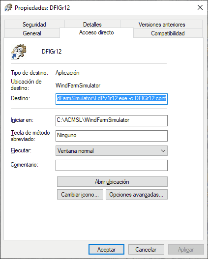

Sometimes it is necessary to run an application using a number of parameters with specific values. The shortcuts on the Windows Desktop allow you to add parameters to the invocation of an executable file. For example, the icon in the following figure:
has the following "properties" ("Explorer" -> click on the icon -> right button):

where it is appreciated that this shortcut has associated the execution of the command
"C: \ ACMSL \ WindFarmSimulator \ LdPv1r12.exe -c DFIGr12.conf"
which corresponds to:
- the executable located in "C: \ ACMSL \ WindFarmSimulator \ LdPv1r12.exe",
and to two parameters: - "-c"
and - "DFIGr12.conf"
The Desk Organizer Options also have that property, associated with the "Command" concept. In fact the Command property of an Option can be:
- Any file that has an extension associated with a registered application.
- An executable file , that may accept parameters for its execution.
- An Internet URL.
In "Adding parameters to a Command" find the explanation on how to change the parameters for case 2).